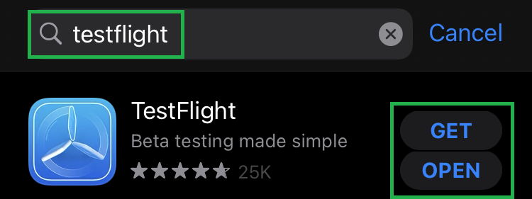
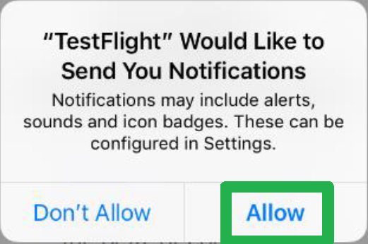
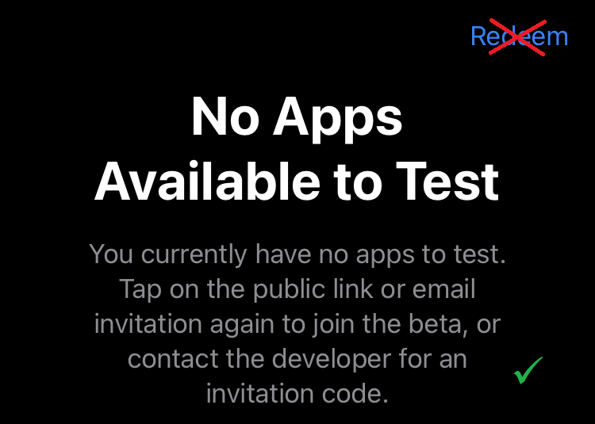
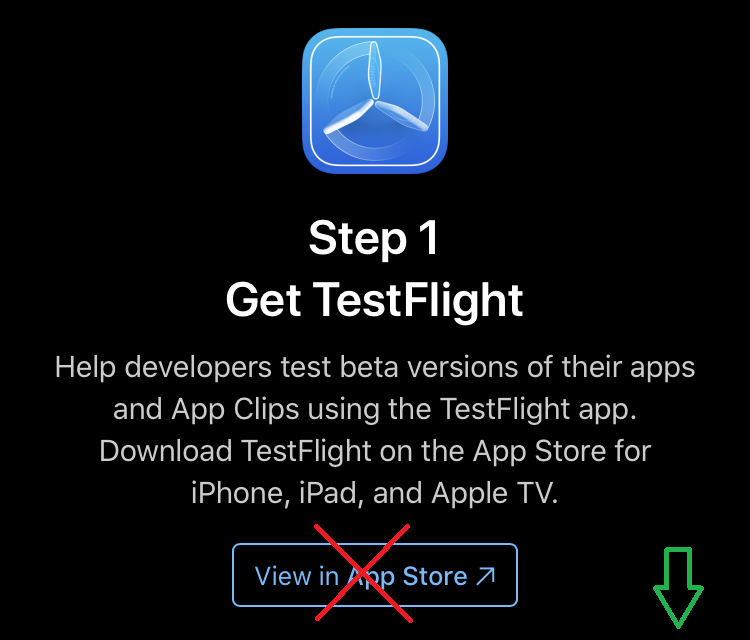
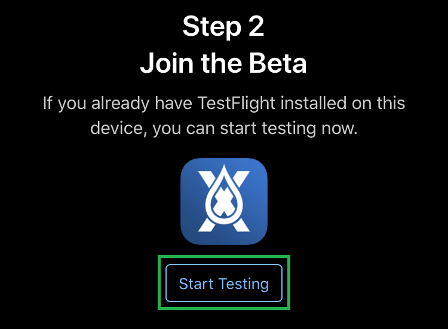
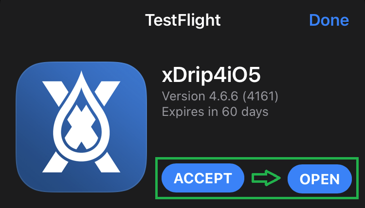
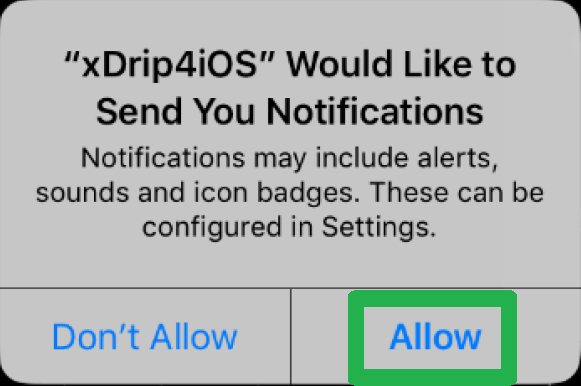
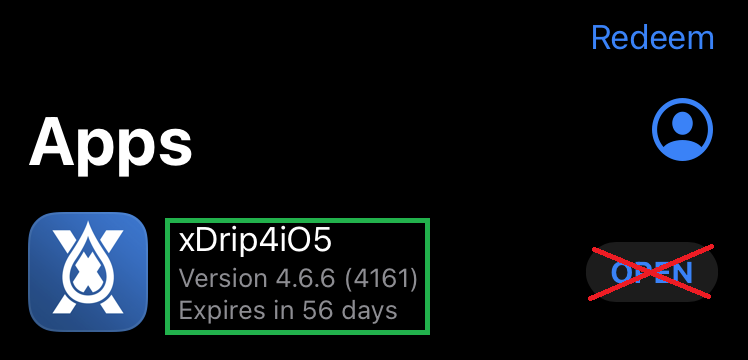
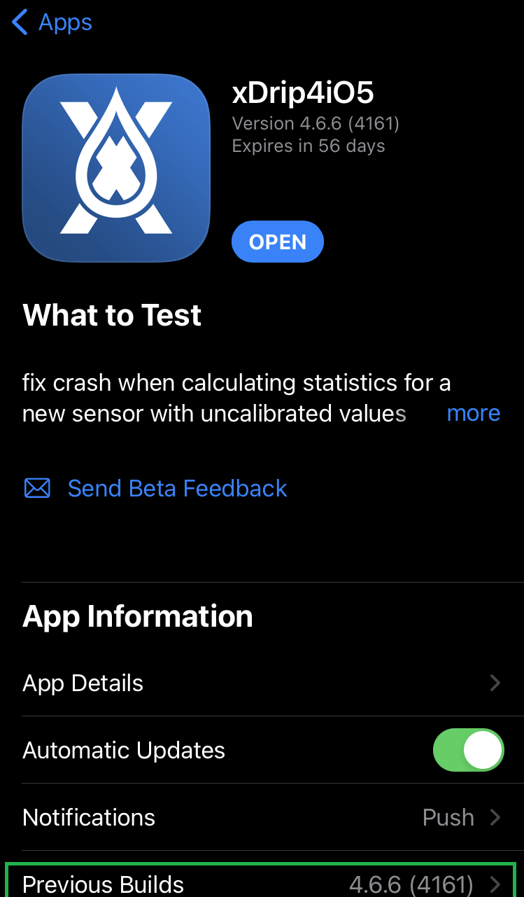
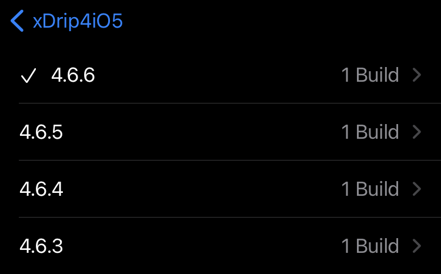

Install from Testflight⌁
Testflight is Apple's platform that allows developers to distribute test versions (often known as Beta versions) of their apps. It is generally much easier for developers to publish for testing compared to releasing them in the main App Store. There are less restrictions and it is also easier for developers to release several versions in quick succession in order to work out bugs and issues.
There are two main ways to get xDrip4iOS on your iPhone:
- Install from Testflight
- Build and install from source code.
The first option is easy for everybody.
The second option is more complex and needs a Mac and some knowledge/experience, but it allows you to modify the code and install custom versions as required.
Anybody who is using xDrip4iOS for looping should always build from source.
1. Install Testflight⌁
Please go to the App Store on your iPhone and search for "testflight". You should find the following app available.

Click Get to install the app (you may be asked to confirm your Apple ID password).
Once installed, open the Testflight app, press Continue at the start screen, Accept the terms and conditions and then Allow notifications.

You can then exit the TestFlight app (there is no redeem code to enter)

2. Join the Beta Test⌁
Once you have Testflight correctly installed, you can now join the xDrip4iOS Beta test. Click on the below link using your iPhone:
Link for xDrip4iOS Testflight Beta Invitation
When you open the link, go to Step 2 and click on Start Testing to begin.


3. Install xDrip4iOS⌁
Once installed, the button will change to Open. Click it to open xDrip4iOS.

From now on, you can just open the app using the icon on your iPhone just like any other app.
TestFlight will open and you will see the xDrip4iOS icon. Click the Install button. Again, accept the terms and conditions, allow the notifications. This is important!

Now you're all done, you can start to connect xDrip4iOS to your CGM source.
Age Restrictions⌁
If you need to setup xDrip4iOS for an Apple ID registered to a child under 13, you must change the iPhone account to an adult's Apple ID (i.e. your own) in order to install Testflight and join the xDrip4iOS test.
Once xDrip4iOS is installed, you can remove your Apple ID and add your child's account again.
Install Previous Builds⌁
If you are having problems with the latest version, then you can always try and revert back to a previous version.
To do this, open Testflight, click on Previous Builds and Install the one that you know was working.



If you have to do this, make sure you let us know about the problem!